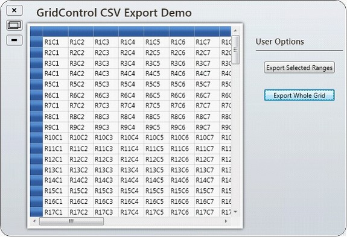
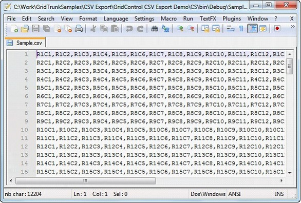
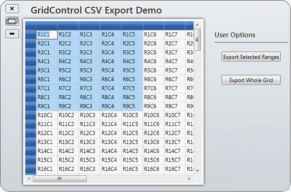
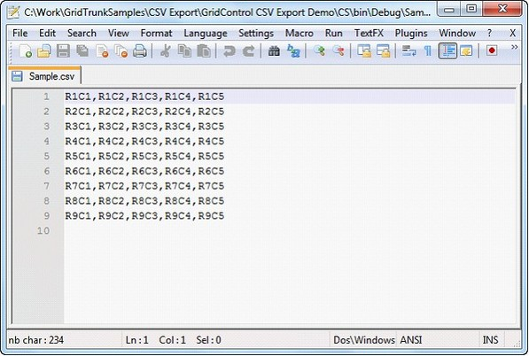

The ExportToCSV method of the GridModelExportExtensions class enables a grid control to be easily exported to CSV format.
To enable exporting, the following .dll files must be added along with the default .dll files in the reference folder:
· Syncfusion.XlsIO.Base
· Syncfusion.XlsIO.WPF
· Syncfusion.GridConverter.Wpf
Export Options
There are two options for exporting a grid control:
1. Export Whole Grid – which exports an entire grid to CSV format.
2. Export Selected Range – which exports only a selected range to CSV format.
Export Whole Grid
You can convert the entire content of a grid control to a CSV file by using the following code:
|
[C#]
this.gc.Model.ExportToCSV("Sample.csv");
[VB]
Me.gc.Model.ExportToCSV("Sample.csv") |
When the code runs, the following output displays.

Figure 131: GridControl to Be Exported
When you are ready to export the entire grid, click Export Whole Grid; the grid content will then be converted to CSV format.

Figure 132: Exported Grid Content In CSV Format
Export Selected Range
You can convert selected grid content to CSV format by using the following code:
|
[C#]
GridRangeInfoList rangeList = gc.Model.SelectedRanges; if (rangeList.Count > 0) { GridRangeInfo range = rangeList[0]; gc.Model.ExportToCSV(range, "Sample.csv"); } |
|
[VB]
Dim rangeList As GridRangeInfoList = gc.Model.SelectedRanges If rangeList.Count > 0 Then Dim range As GridRangeInfo = rangeList(0) gc.Model.ExportToCSV(range, "Sample.csv") End If |
When the code runs, the following output displays.

Figure 133: Grid Selection to Be Exported
To export a selection, highlight the portion of the grid you want to export, and then click Export Selected Range; the selected grid content will then be exported to a CSV file.

Figure 134: Grid Selection Exported Into CSV Format